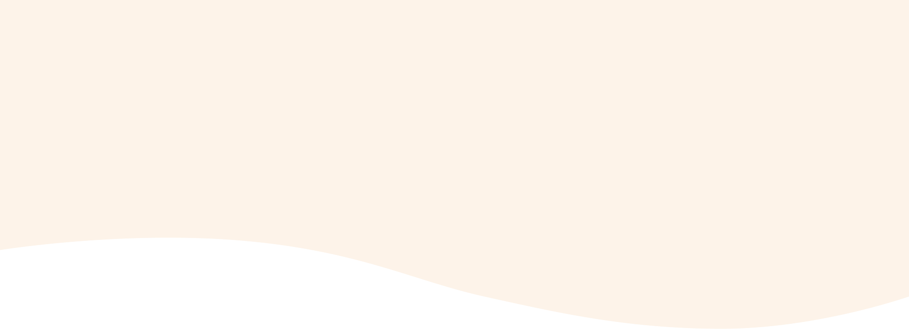
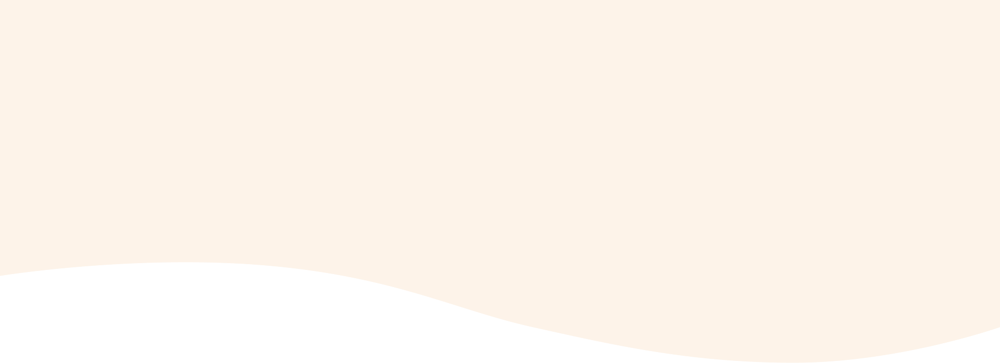
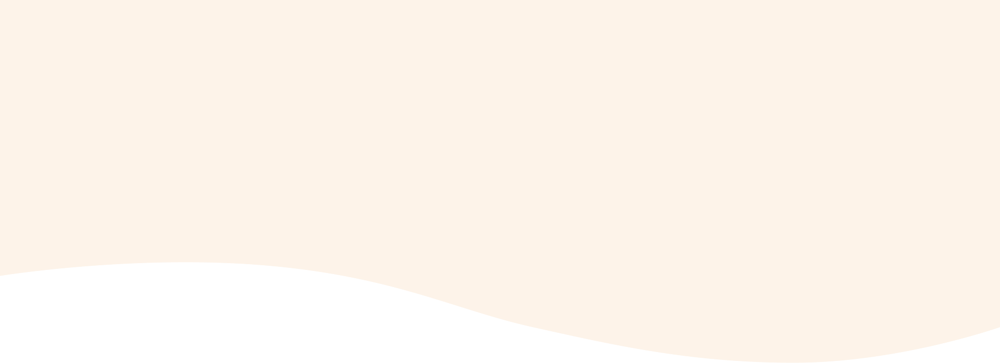
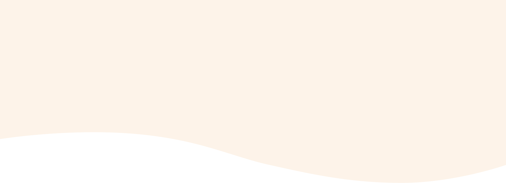
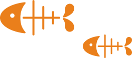
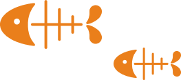

 

我堅信，藉由推動更完善的貓咪福利和相關政策，更是間接地投資於台灣的未來。畢竟，民眾的身心健康與工作熱情是推動經濟的核心動力。透過完善的貓咪福利政策，為台灣的 GDP 經濟帶來巨大效益。
因此，我期望能在立法院內推進這些政策，確保每一隻貓咪都能得到他們應有的照顧，同時也為台灣的經濟發展助一臂之力。讓我們一同護航台灣的幸福經濟，從照顧每一隻貓咪開始。
 


 Latest Activity
Latest Activity

炎炎夏日的周六，我走進了台北寵物論壇，帶著一副貓耳髮箍，決定要全力宣傳「貓咪至上」的理念！我相信，我們的都市中，每一隻貓咪都應該有自己的 VIP 休憩空間。

街上氣氛真的很棒，從小孩到大人，甚至有些狗狗朋友都帶著貓耳來找我握手，真的太可愛了！這次的活動不僅讓我看到大家的熱情，更加堅定了我推進「貓咪友善環境」政策的決心。

今天的收容所不再是一片寂靜。為了讓更多人認識到這裡的毛孩子，我們舉辦了一場前所未有的「模特兒走秀」！